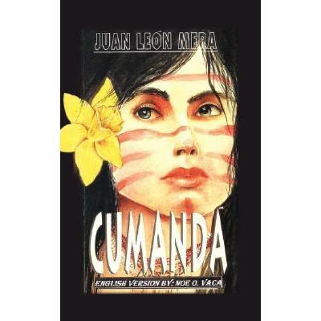
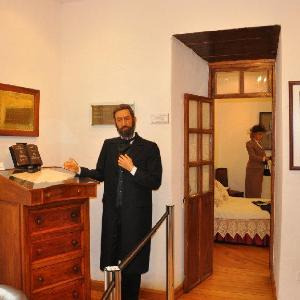
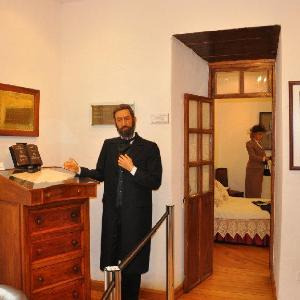

Juan León Mera escritor, político y pintor, quien nació en Ambato, Ecuador. Precursor de la crítica literaria de Ecuador criado por una familia humilde, no conoció a su padre porque lo dejó antes de nacer. Su educación fue autodidacta. Cuando se mudaron a la capital aprendió pintura y escribió en varios periódicos. Se formó políticamente hasta llegar a ser diputado del liberalismo y acabó por ser presidente del Senado. Posteriormente, pasó a ser miembro del Partido Conservador, fue ministro del Tribunal de Cuentas. Tuvo una fuerte preocupación por la cultura criolla, y por ello fundó la Academia ecuatoriana y de igual modo fomentó la conciencia literaria criolla.
Fue el compositor de la letra del himno nacional de Ecuador junto a Antonio Neumane, escribió los versos de Melodías indígenas y la leyenda inca en verso La virgen del Sol. Debemos indicar que, su obra más popular, es Cumandá o un drama entre salvajes, hace parte del género del melodrama y narra los amores frustrados de los hermanos indios Carlos y Cumandá.

Juan León Mera fue un firme defensor de la aristocracia criolla que reconocía, en la existencia de lo indígena, un camino para tomar conciencia de su historicidad, su conflictivo ser y la crisis de su ideología. En el campo de la poesía publicó un volumen de Poesías, el poema La Virgen del Sol, leyenda indígena. Debemos mencionar que, luego de su muerte, el 13 de diciembre de 1894, se estableció un museo en su honor, llamado La quinta de Juan León Mera, en la ciudad de Ambato, esta era su residencia y donde se exhiben sus pertenencias, y algunos fragmentos de correspondencia y versos.
 
